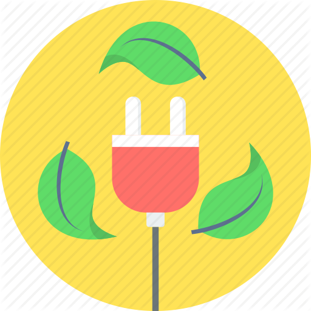

التحكم في الوزن
تساعد ممارسة الرياضة على منع زيادة الوزن والمحافظة على فقدانه، وذلك عن طريق حرق السعرات الحرارية، وكلما زادت شدة النشاط البدني زادت السعرات الحرارية المحروقة، وفي حال عدم توفر الوقت الكبير لممارسة الرياضة أو للذهاب الى الجيم بشكل منتظم؛ فيمكن تحقيق فوائد الرياضة بمجرد القيام بأكثر من نشاط خلال اليوم مثل استخدام السلالم بدلاً من المصعد أو زيادة المهام المنزلية الروتينية.
مكافحة الأمراض والمشاكل الصحية
تفيد ممارسة الإنسان المنتظمة للرياضة بغض النظر عن وزنه في تعزز البروتين الدهني عالي الكثافة (بالإنجليزية: HDL)، وتخفّض نسبة الكولسترول والدهون الثلاثية غير الصحية، وتقلل أيضاً من خطر الإصابة بأمراض القلب والأوعية الدموية بالحفاظ على تدفق الدم بسلاسة، كما أنًها تساعد على منع حدوث مجموعة كبيرة من المشاكل والمخاوف الصحية أو تنظيمها، بما في ذلك السكتة الدماغية، ومتلازمة التمثيل الغذائي، وداء السكري من النوع الثاني، والاكتئاب، وعدد من أنواع السرطان والتهاب المفاصل.
تحسين المزاج
إنّ القيام بنشاط بدني مثل المشي السريع أو جلسة في الجيم لمدّة نصف ساعة، سيسيب لك الشعور بالسعادة ويجعلك أكثر استرخاءً عن طريق تحفيز مختلف المواد الكيميائية في الدماغ، كما سيعزز ثقتك واحترامك لذاتك؛ وذلك لأثره في تحسين شعورك إزاء مظهرك ونفسك.

تعزيز طاقة الجسم
تعمل الرياضة على تحسين قوة العضلات وتعزز قوة التحمل، وتزيد من طاقة الجسم لإنجاز الأعمال اليومية؛ نظراً لدورها المهم في تحسين صحة القلب والرئتين، حيث تعمل التمارين الرياضية على نقل الأكسجين والمواد المغذية إلى أنسجة الجسم، وتساعد نظام القلب والأوعية الدموية على العمل بشكل أكثر كفاءة.